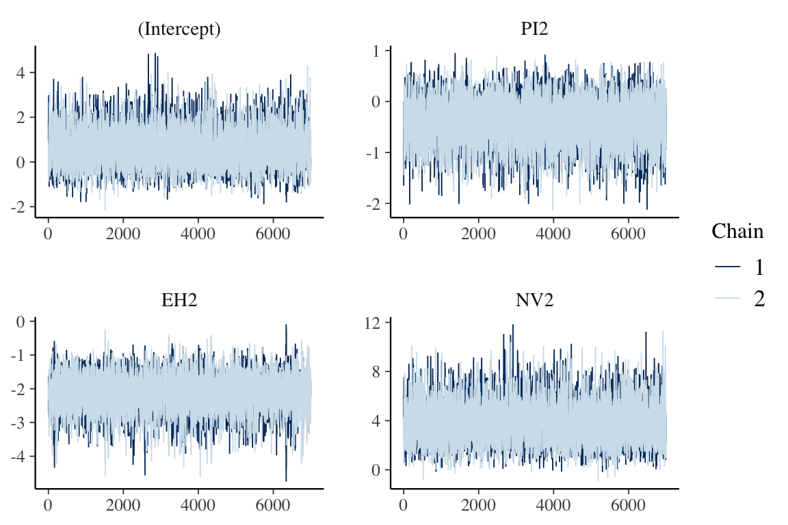
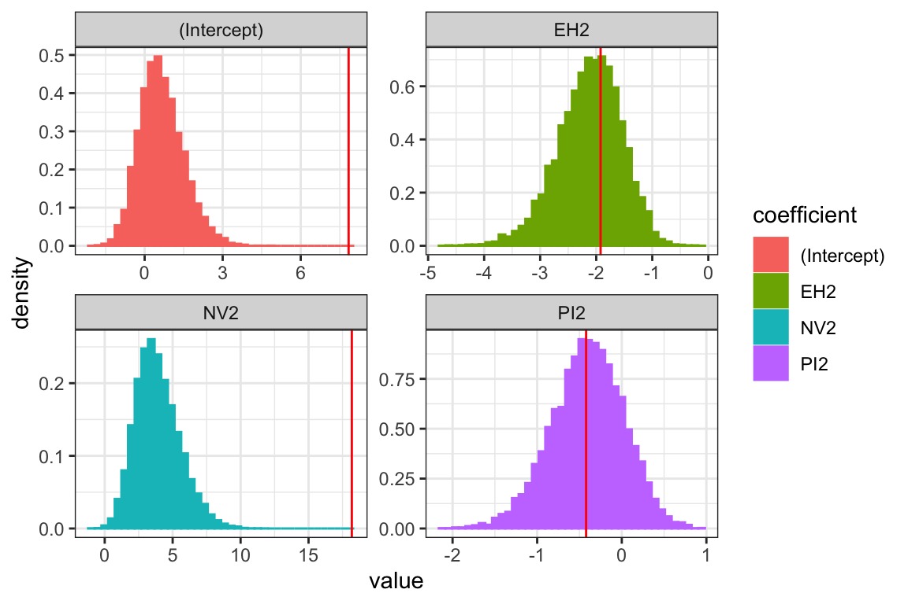

logistic_regression_hmclearn.RmdThis vignette demonstrates fitting a logistic regression model via Hamiltonian Monte Carlo (HMC) using the hmclearn package.
library(hmclearn)
For binary response, we let
\[ p = Pr(Y = 1 | X) = [1 + e^{-X\beta}]^{-1} \]
With likelihood and log-likelihood
\[ \begin{aligned} L(\beta; X, y) &= \prod_{i=1}^n p^{y_i} (1-p)^{1-y_i} \\ &= \prod_{i=1}^{n} \left(\frac{1}{1+e^{-X_i\beta}}\right)^{y_i} \left(\frac{e^{-X_i\beta}}{1+e^{-X_i\beta}}\right)^{1-y_i} \\ l(\beta;X,y) &= \sum_{i=1}^n -y_i\log(1+e^{-X_i\beta}) + (1-y_i)(-X_i\beta - \log(1+e^{-X_i\beta})) \\ &= \sum_{i=1}^n -\log(1+e^{-X_i\beta}) - X_i\beta(1 - y_i) \\ &= \sum_{i=1}^n X_i\beta(y_i - 1) - \log(1 + e^{-X_i\beta}) \end{aligned} \]
We set a multivariate Normal prior for \(\beta\)
\[ \begin{aligned} \beta &\sim N(0, \Sigma_\beta) \\ &\sim N(0, \sigma_\beta^2I) \end{aligned} \]
With pdf
\[ \begin{aligned} p(\beta) &= \frac{1}{\sqrt{\lvert 2\pi \Sigma_\beta \rvert }}e^{-\frac{1}{2}\beta^T \Sigma_\beta^{-1}\beta} \\ \log p(\beta) &= -\frac{1}{2}\log(2\pi \lvert \Sigma_\beta \rvert) - \frac{1}{2}\beta^T \Sigma_\beta^{-1} \beta \\ &\propto -\frac{1}{2}\log \lvert\Sigma_\beta\rvert - \frac{1}{2}\beta^T \Sigma_\beta^{-1} \beta \end{aligned} \]
Let \(B = 1e3\) for instance, as a relatively uninformative prior.
Now derive the log posterior
\[ \begin{aligned} p(\beta | X, y) &\propto p(y | X, \beta) p(\beta) \\ \log p(\beta | X, y) & \propto \log p(y | X, \beta) + \log p(\beta) \\ &\propto \sum_{i=1}^n X_i\beta(y_i - 1) - \log(1 + e^{-X_i\beta}) -\frac{1}{2}\log \lvert\Sigma_\beta\rvert - \frac{1}{2}\beta^T \Sigma_\beta^{-1} \beta \end{aligned} \]
The log posterior is the sum of the log likelihood and the log of the prior for \(\beta\).
Next, we need to derive the gradient of the log posterior for the leapfrog function
\[ \begin{aligned} p(\beta | X, y) &\propto p(y | X, \beta) p(\beta) \\ \log p(\beta | X, y) & \propto \log p(y | X, \beta) + \log p(\beta) \\ &\propto \sum_{i=1}^n X_i\beta(y_i - 1) - \log(1 + e^{-X_i\beta}) -\frac{1}{2}\log \lvert\Sigma_\beta\rvert - \frac{1}{2}\beta^T \Sigma_\beta^{-1} \beta \\ \frac{\partial\log p(\beta | X, y) }{\partial\beta} &\propto X(y - 1)+ \frac{e^{-X\beta}}{1 + e^{-X\beta}}X - \Sigma_\beta^{-1} \beta^T \end{aligned} \]
The user must define provide the design matrix directly for use in hmclearn. Our first step is to load the data and store the design matrix \(X\) and dependent variable vector \(y\).
First, we load the Endometrial cancer data set (Heinze and Schember 2002) and create \(X\) and \(y\). This example also appears in Agresti (2015), and we compare results to his.
data(Endometrial) # data prep Endometrial$PI2 <- with(Endometrial, (PI - mean(PI)) / sd(PI)) Endometrial$EH2 <- with(Endometrial, (EH - mean(EH)) / sd(EH)) Endometrial$NV2 <- Endometrial$NV - 0.5 X <- cbind(1, as.matrix(Endometrial[, which(colnames(Endometrial) %in% c("PI2", "EH2", "NV2"))])) y <- Endometrial$HG colnames(X) <- c("(Intercept)", "PI2", "EH2", "NV2")
To compare results, we first fit a standard linear model using the frequentist function glm. Note the high standard error estimates for the Intercept and NV2.
f <- glm(y ~ X-1, family = binomial()) summary(f) #> #> Call: #> glm(formula = y ~ X - 1, family = binomial()) #> #> Deviance Residuals: #> Min 1Q Median 3Q Max #> -1.50137 -0.64108 -0.29432 0.00016 2.72777 #> #> Coefficients: #> Estimate Std. Error z value Pr(>|z|) #> X(Intercept) 7.8411 857.8755 0.009 0.992707 #> XPI2 -0.4217 0.4432 -0.952 0.341333 #> XEH2 -1.9219 0.5599 -3.433 0.000597 *** #> XNV2 18.1856 1715.7509 0.011 0.991543 #> --- #> Signif. codes: 0 '***' 0.001 '**' 0.01 '*' 0.05 '.' 0.1 ' ' 1 #> #> (Dispersion parameter for binomial family taken to be 1) #> #> Null deviance: 109.517 on 79 degrees of freedom #> Residual deviance: 55.393 on 75 degrees of freedom #> AIC: 63.393 #> #> Number of Fisher Scoring iterations: 17
Next, we fit the logistic regression model using HMC.
N <- 1e4 set.seed(412) t1.hmc <- Sys.time() f_hmc <- hmc(N = N, theta.init = rep(1, 4), epsilon = 0.1, L = 20, logPOSTERIOR = logistic_posterior, glogPOSTERIOR = g_logistic_posterior, varnames = colnames(X), param=list(y = y, X=X, sig2beta=10), parallel=TRUE, chains=2) t2.hmc <- Sys.time() t2.hmc - t1.hmc #> Time difference of 21.39292 secs
The acceptance ratio for each of the HMC chains is sufficiently high for an efficient simulation.
f_hmc$accept/N #> [1] 0.9126 0.9054
The posterior quantiles are summarized after removing an initial burnin period.
summary(f_hmc, burnin=3000) #> Summary of MCMC simulation #> 2.5% 5% 25% 50% 75% 95% #> (Intercept) -0.8227687 -0.5987801 0.05872629 0.5801895 1.1799958 2.1634619 #> PI2 -1.2843964 -1.1375506 -0.68086057 -0.3930759 -0.1111669 0.2704767 #> EH2 -3.3343761 -3.1044416 -2.47800163 -2.0841738 -1.7258986 -1.2481481 #> NV2 1.1507072 1.5214436 2.74143487 3.7218609 4.9026287 6.8221918 #> 97.5% rhat #> (Intercept) 2.5134702 1.000344 #> PI2 0.3844356 0.999929 #> EH2 -1.1087012 1.000028 #> NV2 7.4795121 1.000066
Trace plots provide a visual indication of stationarity. These plots indicate that the MCMC chains are reasonably stationary.
mcmc_trace(f_hmc, burnin=3000)

Histograms of the posterior distribution show that Bayesian parameter estimates align with Frequentist estimates for parameters PI2 and EH2. The posterior distributions are skewed for the Intercept and NV2 based on the likelihood and priors provided in this example.
